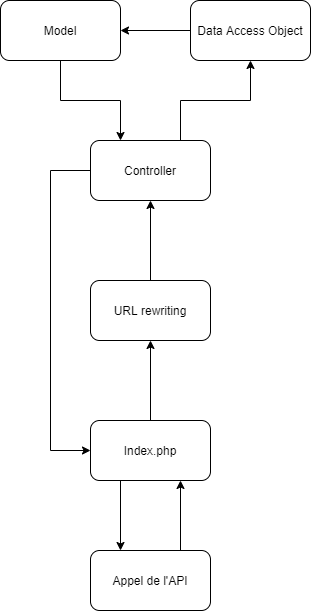

API Caiman¶
L’API sert à pouvoir accéder à la base de données depuis l’application Caiman. Je vais détailler les endpoint et la structure de l’API.
Structure de l’API¶

Pour expliquer la structure de l’API, je vais expliquer étape par étape comment un appel se passe.
L’utilisateur envoie une requête à la page index.php de api.caiman.cfpt.info.
La requête est réceptionnée par index.php. L’url est ensuite traité par le .htaccess pour savoir où doit envoyer à quel controller.
Le contrôleur décide selon les informations reçues quelle méthode il doit exécuter.
Le DAO est appelé et va rechercher dans la base de données les données demandé
Le DAO créé la réponse grâce au model.
La réponse est envoyée à l’utilisateur par l’intermédiaire de la page index.php
Categories¶
GET¶
Permet de recevoir la liste des catégories disponibles.
Les informations reçues sont les suivantes:
id
nom
Games¶
GET¶
Retourne la liste des jeux.
Les informations reçues sont les suivantes:
id
description
nom de l’image
id de la console
id du fichier du jeu
GET(?byName)¶
Retourne la liste des jeux qui dans le nom contient ce que l’utilisateur a demandé.
Les informations reçues sont les suivantes:
id
description
nom de l’image
id de la console
id du fichier du jeu
GET(?byCategory)¶
Retourne la liste des jeux qui appartiennent à une catégorie.
Il faut spécifier l’id de la catégorie qui est demandée.
Les informations reçues sont les suivantes:
id
description
nom de l’image
id de la console
id du fichier du jeu
GET(?byFavoriteUser)¶
Retourne la liste des jeux favoris d’un utilisateur.
Il faut spécifier l’id de l’utilisateur.
Les informations reçues sont les suivantes:
id
description
nom de l’image
id de la console
id du fichier du jeu
GET(?byUserTime)¶
Retourne la liste des jeux auxquels un joueur a joué.
Il faut spécifier l’id de l’utilisateur.
Les informations reçues sont les suivantes:
id
description
nom de l’image
id de la console
id du fichier du jeu
nombre de minutes en jeu
GET(?gameFileName)¶
Retourne le nom du fichier d’un jeu.
Les informations reçues sont les suivantes:
filename
GET(?gameConsole)¶
Retourne la console d’un jeu.
Les informations reçues sont les suivantes:
name
folderName
GET(?idGame&apiKey)¶
Retourne le fichier d’un jeu.
Les informations reçues sont les suivantes:
fichier.iso
GET(?idGameTime&idUser)¶
Retourne le temps de jeu sur un jeu.
Les informations reçues sont les suivantes:
minutes
GET(?idEmulator&idUser&apiKey)¶
Retourne un fichier zip contenant les sauvegardes d’un joueur pour un émulateur particulier
Les informations reçues sont les suivantes:
fichier.zip
POST(?idEmulator&idUser&apiKey)¶
Upload un fichier zip contenant les sauvegardes d’un joueur pour un émulateur particulier
POST(idGameAdd&idUser)¶
Ajouter un jeu en favoris pour un utilisateur particulier
POST(idGameRemove&idUser)¶
Supprime un jeu en favoris pour un utilisateur particulier
POST(idGameCheck&idUser)¶
Vérifie si un jeu est déjà en favoris et retourne un booléen
POST(idGameTimeAdd&idUser)¶
Ajouter une minute de jeu à un jeu particulier pour un utilisateur
Users¶
GET(sans paramétres)¶
Retourne la liste des utilisateurs.
Les informations reçues sont les suivantes:
id
username
POST(avec apitoken)¶
Retourne un utilisateur en particulier
Les informations reçues sont les suivantes:
id
username
password
salt
apitoken
caimanToken
email
idRole
User/connection¶
POST(?username, password)¶
Permet de vérifier les informations de connexion d’un utilisateur
Les informations reçues sont les suivantes:
id
username
password
salt
apitoken
caimanToken
email
idRole
POST(caimanToken)¶
Permet de recevoir les informations d’un utilisateur grâce à un token généré à chaque connexion.
Les informations reçues sont les suivantes:
id
username
password
salt
apitoken
caimanToken
email
idRole